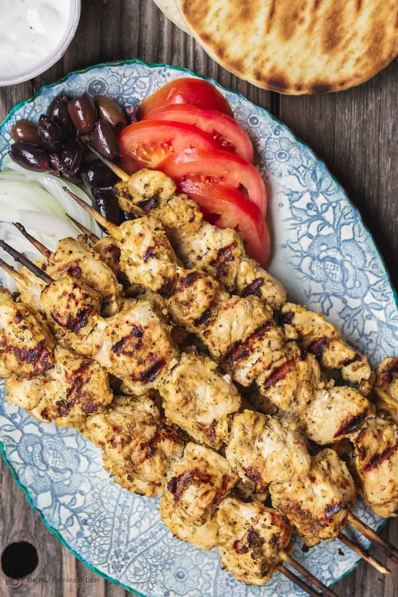

Souvlaki
Home

About souvlaki
Souvlaki (Greek: σουβλάκι, souvláki, [suˈvlaci]; plural: σουβλάκια, souvlákia) is a Greek fast food consisting of
small pieces of meat and sometimes vegetables grilled on a skewer. It is usually eaten straight off the skewer
while still hot.
It can be served with or inside a rolled pita, typically with lemon, sauces, vegetables such as sliced tomato and
onion, and fried potatoes as a side. The meat usually used in Greece and Cyprus is pork.
Ingredients
- 10 garlic cloves, peeled
- 2 tbsp dried oregano
- 1 tsp dried rosemary
- 1 tsp sweet paprika
- 1 tsp each Kosher salt and black pepper
- 1/4 cup Private Reserve Greek extra virgin olive oil
- 1/4 cup dry white wine
- Juice of 1 lemon
- 2 bay leaves
- 2 1/2 lb organic boneless skinless chicken breast, fat removed, cut into 1 1/2 inch pieces
- Greek pita bread
- Tzatziki Sauce
- Sliced tomato, cucumber, onions, and Kalamata olives
Steps
- Prepare the marinade. In the bowl of a small food processor, add garlic, oregano, rosemary, paprika, salt, pepper, olive oil, white wine, and lemon juice (do NOT add the dried bay leaves yet). Pulse until well combined.
- Place chicken in a large bowl and add bay leaves. Top with marinade. Toss to combine, making sure chicken is well-coated with marinade. cover tightly and refrigerate for 2 hours or overnight (see note for quicker marinating option.)
- Soak 10 to 12 wooden skewers in water for 30 to 45 minutes or so. Prepare Tzatziki sauce and other fixings, and if you’re adding Greek salad or other sides, prepare those as well. (some sides like roasted garlic hummus may take longer, you can prepare those in advance).
- When ready, thread marinated chicken pieces through the prepared skewers.
- Prepare outdoor grill (or griddle). Brush grates with a little oil and heat over medium-high heat. t. Place chicken skewers on grill (or cook in batches on griddle) until well browned and internal temperature registers 160°F on instant read thermometer (it will continue cooking to 165°F as it rests). Be sure to turn skewers evenly to cook on all sides, about 5 minutes total. (Adjust temperature of grill if necessary). While grilling, brush lightly with the marinade (then discard any left marinade).
- Transfer chicken to serving platter and let rest for 3 minutes. Meanwhile, briefly grill pitas and keep warm.
- Assemble grilled chicken souvlaki pitas. First, spread Tzatziki sauce on pita, add chicken pieces (take them off skewers first, of course) then add veggies and olives.
- Optional: if you want more items to add to your buffet, consider Greek salad, watermelon salad, roasted garlic hummus, or a big Mezze platter.